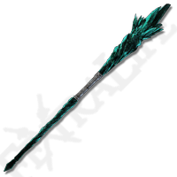
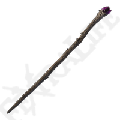

ТИП ОРУЖИЯ
Посох блестящих камней
АТАКА
25
ИМЯ:
Посох астролога
ОПИСАНИЕ:
Посох астролога с блестящим камнем на наконечнике. Катализатор для сотворения чар.
Сперва выучите чары в месте благодати. Чтобы сотворить чары, воспользуйтесь посохом.
МЕСТОНАХОЖДЕНИЕ:
Начальная экипировка класса Астролог.
Продаёт Торговец-кочевник (Берег озера Лиурнии).

ТИП ОРУЖИЯ
Посох блестящих камней
АТАКА
24
ИМЯ:
Блестящий посох Азура
ОПИСАНИЕ:
Посох Азура, чародея первозданной магии. Овладеть им способны лишь те, кто постиг мудрость камня.
Ускоряет сотворение любых чар, однако повышает расход ОК.
МЕСТОНАХОЖДЕНИЕ:
Озёрная Лиурния, локация Академия Райи Лукарии.

ТИП ОРУЖИЯ
Посох блестящих камней
АТАКА
39
ИМЯ:
Метеоритный посох
ОПИСАНИЕ:
Посох с тёмно-фиолетовым блестящим камнем — говорят, это осколок метеорита. Значительно повышает мощь чар, особенно заклинания гравитации.
МЕСТОНАХОЖДЕНИЕ:
Звёздные пустоши. Находится в одной из разрушенных построек, на юго-западе от локации Руины улицы мудрецов.